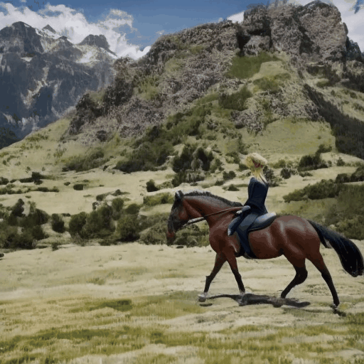

Some Cases

A person is riding a horse under the mountain from right to left.
A bird flies around many branches.
Some moose are walking in a meadow under the aurora borealis.
A duck is swimming in the pool and then walks ashore.
A tornado swept through, sending two cars into the sky.
A boy kicks a ball into a pool of water and a dog runs over to it.
 A dog is running from grass to beach.
A dog is running from grass to beach.
 A cloud drifted in from the left and was blown to pieces by the wind after a while.
A cloud drifted in from the left and was blown to pieces by the wind after a while.
 A cat is running from a rock to street.
A cat is running from a rock to street.
 A dog is running from the wheat field to a lake.
A dog is running from the wheat field to a lake.
 A tree in the wind.
A tree in the wind.
 A clownfish goes up and down in the sea.
A clownfish goes up and down in the sea.